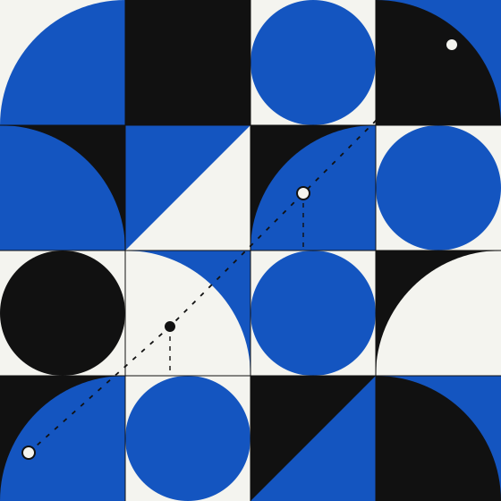

Functions and graphs
Domains, outputs and coordinates.
L37CHAPTER 03 / CALCULUS
Of a real variable.
Understand curves, read their slopes, and connect derivatives to exponential and logarithmic functions.

START HERE
For every x in its domain, a function assigns exactly one value f(x). Plot, read and compare its graphs.
Six steps, from graphs to algorithmic complexity.
Domains, outputs and coordinates.
L37Average rate and instantaneous slope.
L38Sum, product, quotient and chain rule.
L39Growth and properties of eˣ.
L40Inverse function and logarithm laws.
L41Base-2 logarithms and growth.
L4202 / EXPLORATION
Drag Q along the curve or adjust h. Watch the slope of PQ: as h approaches zero, its slope approaches the derivative f′(1) = 1.
[f(1+h) − f(1)] / h = 2
Use arrow keys, a mouse, finger or stylus to move Q.
Design prototype only: no saved progress or grading. Original illustrations, mathematical source PDF pages 5–12. (Bruno Teheux, Mathématiques Générales — Fonctions d’une variable réelle, 2025–2026).